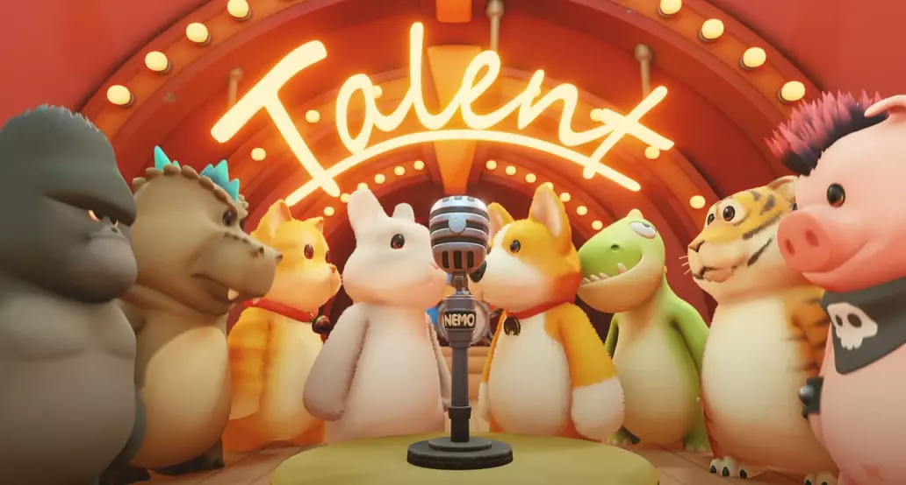

RP6 field report
Party Animals
🚧 Leave at Home
Sometimes "playable" isn't enough. A party game should make you laugh because your friends threw you off a bridge, not because the frame rate did.
Reviewed July 2026

Test setup
RP6 compatibility
- Device
- Retroid Pocket 6
- OS
- Armada
- Store
- Steam
- Compatibility layer
- Proton
The play session
Experience
I really wanted this one to work.
Party Animals launched and was technically playable, but frequent stuttering quickly got in the way of the experience. While the adorable visuals and chaotic gameplay were all there, the inconsistent performance made every match feel sluggish.
This is the kind of game that relies on quick reactions, split-second decisions and unpredictable physics. Unfortunately, those moments lose a lot of their charm when the frame rate can’t keep up.